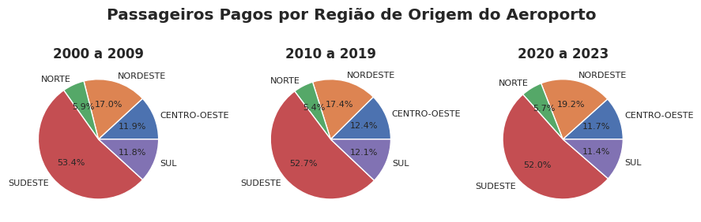

Resumo
A Agência Nacional de Viação Civil (ANAC), agência reguladora do transporte aéreo no Brasil, disponibilidade em seu portal dados sobre o transporte aéreo brasileiro para consulta péblica. Tais dados permite por meio de sua análise conhcer e explorar o comportamento das agências de aviação e passageiros do Brasil. De posse desses dados, foram desenvolvidas análises estatásticas e vizualizações que nos permitem extrair informações e insights como origem e destino de voos, tépicos mais frequentes em reclamações, distribuições dos tipos de voos e etc.
1. Introdução
Com o intuito de ampliar o conhecimento da sociedade brasileira e de subsidiar a realização de pesquisas, estudos e análises mais abrangentes sobre o setor, a ANAC tem disponibilizado, na seção "Dados e Estatísticas" do seu portal na internet, relatórios, estudos e informações sobre as condições de mercado. A série histórica (desde o ano 2000) disponibilizada no portal possui alto grau de detalhamento. A análise e entendimento desses dados têm potencial para nos ajudar a entender as conexões existentes entre os aeroportos do Brasil, o perfil de voo operado por cada um deles, passageiros, cargas e reclamações feitas. Regulamentados pela Resolução ANAC nº 191/2011 e pelas Portarias ANAC nº 1.189 e 1.190/SRE/2011, os dados são mensalmente fornecidos à ANAC, até o dia 10 do mês subsequente ao de referência, pelas empresas brasileiras e estrangeiras que exploram os serviços de transporte aéreo público regular e não regular no Brasil. Na busca pela melhoria continuada da qualidade da informação e com o propósito de alcançar o maior nível de consistência possível, os dados são submetidos a críticas, validações e procedimentos de auditoria pela Agência. Assim, os dados estão sujeitos a revisões, correções e alterações, podendo apresentar diferenças em relação àqueles divulgados anteriormente ou mesmo discrepâncias e observações, conhecidas como outliers, que devem ser consideradas em sua análise.
2. Exploração de dados
Com o intuito de ampliar o conhecimento da sociedade brasileira e de subsidiar a realização de pesquisas, estudos e análises mais abrangentes sobre o setor, a ANAC tem disponibilizado, na seção "Dados e Estatísticas" do seu portal na internet, relatórios, estudos e informações sobre as condições de mercado. A série histórica (desde o ano 2000) disponibilizada no portal possui alto grau de detalhamento. A análise e entendimento desses dados têm potencial para nos ajudar a entender as conexões existentes entre os aeroportos do Brasil, o perfil de voo operado por cada um deles, passageiros, cargas e reclamações feitas. Regulamentados pela Resolução ANAC nº 191/2011 e pelas Portarias ANAC nº 1.189 e 1.190/SRE/2011, os dados são mensalmente fornecidos à ANAC, até o dia 10 do mês subsequente ao de referência, pelas empresas brasileiras e estrangeiras que exploram os serviços de transporte aéreo público regular e não regular no Brasil. Na busca pela melhoria continuada da qualidade da informação e com o propósito de alcançar o maior nível de consistência possível, os dados são submetidos a críticas, validações e procedimentos de auditoria pela Agência. Assim, os dados estão sujeitos a revisões, correções e alterações, podendo apresentar diferenças em relação àqueles divulgados anteriormente ou mesmo discrepâncias e observações, conhecidas como outliers, que devem ser consideradas em sua análise.
2.1 Metados
Os Dados Estatísticos possuem grande semelhança em relação ao programa estatístico da International Civil Aviation Organization (ICAO), em especial no significado das variáveis. Assim, para facilitar a comparação, os nomes de algumas variáveis são apresentados também em inglês. Apesar de estarem dispostas como informações de etapas básicas, as variáveis RPK, RTK, Carga Paga Km, Carga Grátis Km e Correio Km das empresas estrangeiras são computadas por meio das informações congêneres advindas das etapas combinadas. Assim, ao se desagregar essas variáveis de demanda das empresas estrangeiras por aeroporto, ou por rota, e as comparar com as informações de oferta (ASK e ATK, originadas das etapas básicas), é possível que os valores das taxas de aproveitamento estejam subdimensionados ou superdimensionados, e, em alguns casos, estarem superiores a 100%. Por exemplo, o Load Factor (RPK/ASK) de empresas estrangeiras, desagregado por aeroporto, pode ser superior a 100%, devido à formatação dos dados.
2.2 Dados Faltantes
Pela Figura 1, observa-se que algumas colunas possuem uma grande quantidade de valores faltantes (nulos), ultrapassando os 10% e chegando até 30% do total, portanto deve-se levar isso em consideração na exploração dessas variáveis. A Figura 2 complementa essa visão, mostrando uma redução na quantidade de dados faltantes com o passar do tempo, indo de um patamar de 13% no início da série para cerca de 5% a partir do ano de 2021, o que pode sugerir que os dados mais recentes são mais completos.

2.3 Voos, Passageiros e Carga por Ano
O número de voos permaneceu relativamente estável ao longo dos anos, exceto no ano de 2020, com queda acentuada devido à pandemia da Covid-19, conforme mostrado na Figura 3. O número de passageiros e o volume de carga apresentam-se numa série ascendente. Em conclusão, supõe-se que as aeronaves utilizadas tenham aumentado de capacidade para comportar essa elevação de passageiros e carga.
2.4 Voos, combustível e capacidade por Ano
Pelo gráfico acima, observa-se novamente que o número de voos permanece relativamente estável conforme já visto no item anterior. A capacidade teve crescimento no período, o que explica o aumento do número de passageiros e de carga transportada mesmo tendo o mesmo nível de quantidade de voos, conforme visto no item anterior. O consumo de combustível também se elevou, o que pode ser explicado pela elevação da quantidade de passageiros e carga no período.
2.5 Correlações de Pearson
A Figura 5 mostra o Mapa de Calor para as Correlações de Pearson. Existem alguns grupos de variáveis com correlação muitíssimo elevada. Relacionadas à capacidade e utilização: Consumo de combustível Distância Voada Horas Voadas ASK - assentos disponíveis x km voados RPK - passageiros pagantes x km voados ATK - capacidade de peso (passageiros + carga + correio) x km voados RTK - peso carregado (passageiros + carga + correio) x km voados Relacionadas ao transporte de passageiros: Assentos Disponíveis Passageiros Pagos Payload (capacidade total de peso da aeronave) Esses foram os grupos principais, mas outras correlações fortes ainda podem ser encontradas.
2.6 Número de Voos, Passageiros e Carga por Aeroporto de Origem
São apresentados os top 10 aeroportos de origem por número de voos e a evolução desde o ano 2000 na Figura 6. Os aeroportos de Guarulhos, Galeão, Viracopos e Manaus têm uma concentração maior no transporte de cargas do que os demais.
2.7 Evolução de Voos por Aeroporto de Origem
São apresentados os top 10 aeroportos de origem por núumero de voos desde o ano 2000 na Figura 7 O aeroporto de Viracopos teve um crescimento bastante expressivo enquanto que o Galeão teve queda.
2.8 Evolução de Passageiros por Natureza
A Figura 8 traz informações sobre a natureza dos passageiros quanto ao destino dos voos. Tanto os passageiros domésticos quanto internacionais tiveram crescimento no período, embora os domésticos tenham tido um crescimento bem mais acentuado.
2.9 Voos, Passageiros e Carga por Região do Aeroporto de Origem
As Figuras 9, 10 e 11 trazem um comparativo da distribuição dos Aeroportos de Origem por Região ao longo dos anos. Voos: aumento na região Sudeste, redução na região Norte e estável nas demais. Passageiros: aumento na região Nordeste, redução na região Sudeste e estável nas demais. Carga: aumento na região Sudeste, redução nas regiões Centro-Oeste e Sul e estável nas demais.
2.10 Fator de Carga
A Figura 12 traz informações a respeito do fator de carga das aeronaves, ou seja, o percentual de ocupação sobre a carga disponível. A análise indica que as capacidades das aeronaves não são completamente ocupadas. Por exemplo, metade dos voos (frequência acumulada de 50%) tiveram uma ocupação inferior a 70% (fator de carga de 70%).
3. Métodos
3.1 Reclamações dos Usuários
Pela Figura 13, podemos perceber que dentre as reclamações ocorridas no período, problemas relacionados a cancelamento, atraso, reclamações não atendidas, venda enganosa e cobrança indevida estão entre os mais comuns.
3.2 Rotas Aereas
Pela figura 14 podemos notar que aeroportos situados na região sudeste do país apresentam maior quantidade de voos comerciais ocorridos no período (principalmente no estado de São Paulo).
Conclusão
Resumo das conclusões e implicações das análises apresentadas.
Fontes de Dados
Os dados utilizados para esta análise foram obtidos a partir dos dados abertos do portal da transparência, especificamente da ANAC. Para mais detalhes, consulte os links abaixo:
O notebook Jupyter utilizado para a análise pode ser acessado aqui.